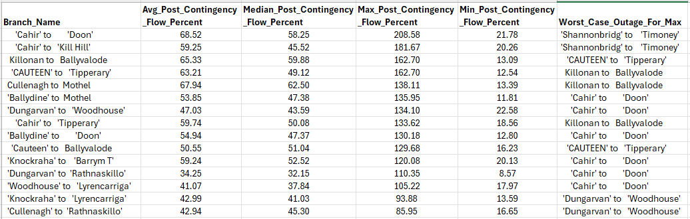

Hourly Timeseries Simulation#
Transmission planners increasingly require accurate hourly simulations to assess the operational impact of integrating new renewable generation or network reinforcements. While the static load flow cases are useful, there is a need within the industry for more depth in order to understand how new generators or network reinforcements impact the system during normal operation. Unlike traditional tools (e.g., PLEXOS, GAMS, PSSE, TARA), this Python-based solution using PandaPower significantly reduces cost and analysis time while maintaining accuracy.
In light of the recent decision on Large Energy User connection, there will be a push for Eirgrid to create a network capacity tool similar to what has been created for the distribution network by ESB. It may not be feasible to have a new transmission network capacity tool supported by data from quarterly simulations using PLEXOS. Instead, this pandapower based tool is a capable alternative.
Method#
The first stage in the timeseries simulation part of this tool consists of creating a balanced power system model for each hour. The model is given a set of hourly values representing demand factor of peak, wind capacity factor and solar capacity factor. Each hourly simulation is conducted by creating a balanced load-generation model, dispatching generation units according to EirGrid’s priority dispatch rules, and ensuring network constraints are observed.
This leaves room for edits as needed by the user, but keeps the focus on hourly load flow and realistic system dispatch. If the user would like specific battery storage projects with duration of 8 hours and others with 4 hour duration, they are able to make changes to reflect any unique disptach sensitivity. Currently the script operates dispatching all battery storage uniformly, charging when renewable generation is high and discharging when renewables are low. This is another area that can be modified, if specific projects seek to dispatch based on local generation/demand rather than central system-wide dispatch.
A balanced and converged network model is created for each hour at a rate of roughly 1463 hours (~2 months) in under 25 minutes using standard AC newton raphson powerflow solutions.
After the dispatch balancing is completed for each network model, the nodal analysis begins. Contingency analysis is completed for each hour, identifying the worst case contingency for each branch in the system greater or equal to 110kV. For each branch that experiences a worst case contingency greater than a user-defined “overload threshold”, shift factors are gathered and aggregated according to each bus. In doing this, the user can determine which nodes have a greater contribution to all worst case overloads for each hour in the simulation. There are two functional ways to complete this, either by AC powerflow for both the intact system and AC contingency analysis, or AC power flow on the intact system with DC LODF approximation for the contingency analysis. The latter being the most time efficient, capable of processing 2 months of hourly data in 42 minutes.
Output#

import pandas as pd
import numpy as np
import pandapower as pp
import plotly.graph_objects as go
from dash import Dash, dcc, html, Input, Output
PF_SETTINGS = {
"algorithm": "nr",
"max_iteration": 100,
"tolerance_mva": 5e-3,
"init": "dc",
"enforce_q_lims": True,
"calculate_voltage_angles": True,
"logging": False,
"voltage_depend_loads": False,
"v_debug": True
}
# =============================================================================
# Helper Functions for Color Mapping
# =============================================================================
def get_interpolated_color(value, min_val, max_val):
"""Returns an RGB string based on linear interpolation between min and max values.
As the value increases, the red component increases and blue decreases."""
# Ensure value is within the specified range
value_clamped = min(max(value, min_val), max_val)
# Map value to a 0-1 range
frac = (value_clamped - min_val) / (max_val - min_val)
red = int(255 * frac)
blue = int(255 * (1 - frac))
return f'rgb({red}, 0, {blue})'
# =============================================================================
# Figure Function: Standard Load Flow Plot
# =============================================================================
def create_standard_loadflow_figure(net):
"""
This function runs a standard load flow on the provided pandapower network,
extracts bus and line results, and then creates an interactive plotly figure.
The buses are colored by their voltage magnitude and lines are colored based
on the loading percentage.
"""
# Run the power flow simulation
pp.runpp(net, **PF_SETTINGS)
# Ensure that bus coordinates exist.
# We assume that net.bus contains columns 'name', and optionally 'x' and 'y'
buses = net.bus.copy()
if 'x' not in buses.columns or 'y' not in buses.columns:
# If not, assign dummy coordinates (e.g. using random positions for demonstration)
np.random.seed(42)
buses['x'] = np.random.uniform(0, 100, size=len(buses))
buses['y'] = np.random.uniform(0, 100, size=len(buses))
# Create a lookup dictionary: bus name -> (x, y)
bus_coords = {row['name']: (row['x'], row['y']) for i, row in buses.iterrows()}
# Prepare the figure
fig = go.Figure()
# =============================================================================
# Plot Bus Markers
# =============================================================================
# We use voltage magnitude (vm_pu) from res_bus to color-code the buses.
for i, bus in buses.iterrows():
x, y = bus['x'], bus['y']
bus_name = bus['name']
# Get voltage from the load flow results (default to 1.0 if missing)
voltage = net.res_bus.loc[i, 'vm_pu'] if i in net.res_bus.index else 1.0
# Add a marker for the bus with a colorscale based on voltage
fig.add_trace(go.Scatter(
x=[x], y=[y],
mode='markers+text',
text=[bus_name],
textposition='top center',
marker=dict(
size=12,
color=voltage,
colorscale='Viridis',
colorbar=dict(title="Voltage (p.u.)")
),
hovertemplate=(f"Bus: {bus_name}<br>"
f"Voltage: {voltage:.3f} p.u.<br>"
f"Coordinates: ({x:.1f}, {y:.1f})"),
name=bus_name
))
# =============================================================================
# Plot Lines with Flow Data and Direction Arrows
# =============================================================================
# The line data is available in net.line and the simulation results are in net.res_line.
for idx, line in net.line.iterrows():
# Extract from_bus and to_bus indices
from_bus = line['from_bus']
to_bus = line['to_bus']
# Retrieve corresponding bus names (assuming they are uniquely defined)
from_name = net.bus.loc[from_bus, 'name']
to_name = net.bus.loc[to_bus, 'name']
from_coords = bus_coords.get(from_name)
to_coords = bus_coords.get(to_name)
if from_coords is None or to_coords is None:
continue # Skip if coordinates cannot be found
# Use the loading percentage for color mapping
loading = net.res_line.loc[idx, 'loading_percent']
line_color = get_interpolated_color(loading, 0, 100)
# Plot the line between the two buses
fig.add_trace(go.Scatter(
x=[from_coords[0], to_coords[0]],
y=[from_coords[1], to_coords[1]],
mode='lines',
line=dict(color=line_color, width=4),
hovertemplate=(f"Line: {from_name} to {to_name}<br>"
f"Loading: {loading:.1f}%"),
name=f"Line {from_name}-{to_name}"
))
# Compute mid-point for placing an arrow to indicate flow direction
mid_x = (from_coords[0] + to_coords[0]) / 2
mid_y = (from_coords[1] + to_coords[1]) / 2
# Determine arrow direction based on p_from_mw (if positive: from from_bus to to_bus)
p_from_mw = net.res_line.loc[idx, 'p_from_mw']
arrow = dict(
x=to_coords[0] if p_from_mw >= 0 else from_coords[0],
y=to_coords[1] if p_from_mw >= 0 else from_coords[1],
ax=from_coords[0] if p_from_mw >= 0 else to_coords[0],
ay=from_coords[1] if p_from_mw >= 0 else to_coords[1],
xref="x", yref="y", axref="x", ayref="y",
showarrow=True, arrowhead=2, arrowsize=1, arrowwidth=2,
arrowcolor=line_color
)
fig.add_annotation(arrow)
# =============================================================================
# Layout Adjustments
# =============================================================================
fig.update_layout(
title="Standard Load Flow Results",
xaxis_title="X Coordinate",
yaxis_title="Y Coordinate",
yaxis=dict(scaleanchor="x", scaleratio=1),
hovermode="closest",
width=1000, height=800
)
return fig
# =============================================================================
# Figure Function: Contingency Analysis Plot
# =============================================================================
def create_contingency_figure(net, branch_csv, bus_csv):
"""
This function loads contingency analysis results from CSV files for branches and buses.
It then creates a plot where:
- For each branch (circuit), a line is plotted between the two terminal buses.
The line is color-coded using the 'Max_Post_Contingency_Flow_Percent' value and hover text shows
both the maximum post contingency flow and the 'Worst_Case_Outage_For_Max'.
- For each bus, a marker is added with hover text detailing the contingency metrics like
'Cumulative_OTDF', 'Maximum_OTDF', and 'Worst_Circuit'.
"""
# Load CSV results
df_branch = pd.read_csv(branch_csv)
df_bus = pd.read_csv(bus_csv)
# Make sure the pandapower network has coordinates as before
buses = net.bus.copy()
if 'x' not in buses.columns or 'y' not in buses.columns:
np.random.seed(42)
buses['x'] = np.random.uniform(0, 100, len(buses))
buses['y'] = np.random.uniform(0, 100, len(buses))
# Create a lookup dictionary: bus name (cleaned) -> (x, y)
bus_coords = {}
for i, row in buses.iterrows():
# Clean the name (remove extraneous quotes/spaces)
name_clean = str(row['name']).replace("'", "").strip()
bus_coords[name_clean] = (row['x'], row['y'])
# Initialize the figure
fig = go.Figure()
# =============================================================================
# Plot Branch (Circuit) Contingency Data
# =============================================================================
for i, row in df_branch.iterrows():
branch_name = row['Branch_Name']
# Assume the branch name is of the form "BusA to BusB" (with possible extra spaces/quotes)
parts = branch_name.split("to")
if len(parts) != 2:
continue # Skip entries that do not match the expected format
bus_from_name = parts[0].replace("'", "").strip()
bus_to_name = parts[1].replace("'", "").strip()
from_coords = bus_coords.get(bus_from_name)
to_coords = bus_coords.get(bus_to_name)
if from_coords is None or to_coords is None:
continue
# Use the "Max_Post_Contingency_Flow_Percent" value to determine the line color
loading = row['Max_Post_Contingency_Flow_Percent']
line_color = get_interpolated_color(loading, 0, 150) # Adjust the max value as needed
# Add the line trace
fig.add_trace(go.Scatter(
x=[from_coords[0], to_coords[0]],
y=[from_coords[1], to_coords[1]],
mode='lines',
line=dict(color=line_color, width=4),
hovertemplate=(f"Branch: {branch_name}<br>"
f"Max Post-Contingency Flow: {loading:.1f}%<br>"
f"Worst Case Outage: {row['Worst_Case_Outage_For_Max']}"),
name=branch_name
))
# =============================================================================
# Plot Bus Contingency Data
# =============================================================================
for i, row in df_bus.iterrows():
bus_name = str(row['Bus_Name']).replace("'", "").strip()
coords = bus_coords.get(bus_name)
if coords is None:
continue
cumulative_otdf = row['Cumulative_OTDF']
maximum_otdf = row['Maximum_OTDF']
# Color-code the bus marker using (for example) maximum_otdf
marker_color = get_interpolated_color(maximum_otdf, 0, 150)
hover_text = (f"Bus: {bus_name}<br>"
f"Cumulative OTDF: {cumulative_otdf}<br>"
f"Maximum OTDF: {maximum_otdf}<br>"
f"Worst Circuit: {row['Worst_Circuit']}")
fig.add_trace(go.Scatter(
x=[coords[0]], y=[coords[1]],
mode='markers+text',
text=[bus_name],
textposition='top center',
marker=dict(
size=12,
color=marker_color,
colorscale='Viridis'
),
hovertemplate=hover_text,
name=bus_name
))
# =============================================================================
# Layout Adjustments
# =============================================================================
fig.update_layout(
title="Contingency Analysis Results",
xaxis_title="X Coordinate",
yaxis_title="Y Coordinate",
yaxis=dict(scaleanchor="x", scaleratio=1),
hovermode="closest",
width=1000, height=800
)
return fig
# =============================================================================
# Dash Application Setup
# =============================================================================
# Create a Dash app instance
app = Dash(__name__)
# The layout comprises a title and two tabs:
# - Tab 1: Standard Load Flow (using the pandapower model and simulation)
# - Tab 2: Contingency Analysis (using CSV results)
app.layout = html.Div([
html.H1("Power System Analysis Tool - Irish High Voltage Transmission"),
dcc.Tabs(id="tabs", value="tab-standard", children=[
dcc.Tab(label="Standard Load Flow", value="tab-standard"),
dcc.Tab(label="Contingency Analysis", value="tab-contingency")
]),
html.Div(id="tabs-content")
])
# Callback to update the displayed tab content
@app.callback(Output("tabs-content", "children"),
Input("tabs", "value"))
def render_tab_content(tab):
if tab == "tab-standard":
# ---------------------------------------------------------------------
# Load or create the pandapower network model.
# Replace this section with your actual network model if available.
# Here we try to load from a pickle file; if not found, a dummy network is built.
# ---------------------------------------------------------------------
try:
net = pp.from_pickle("network_model.pkl")
except Exception as e:
print("Loading network_model.pkl failed; creating a simple demo network.")
net = pp.create_empty_network()
b1 = pp.create_bus(net, vn_kv=110, name="Timahoe")
b2 = pp.create_bus(net, vn_kv=110, name="Coolcor")
# Create a simple line (you should replace with your actual network topology)
pp.create_line(net, from_bus=b1, to_bus=b2, length_km=10, std_type="149-AL1/24-ST1A 110.0")
# Optionally add loads/generators to simulate realistic results
# Create the standard load flow figure
fig_standard = create_standard_loadflow_figure(net)
return html.Div([dcc.Graph(figure=fig_standard)])
elif tab == "tab-contingency":
# ---------------------------------------------------------------------
# For contingency analysis, we again need the network for bus locations.
# Then we load the CSV files that hold the contingency results.
# Ensure the CSV files 'circuit_results.csv' and 'bus_results.csv' are available.
# ---------------------------------------------------------------------
try:
net = pp.from_pickle("adjusted_network_1162.p")
except Exception as e:
print("adjusted_network_1162.p failed; creating a simple demo network.")
net = pp.create_empty_network()
b1 = pp.create_bus(net, vn_kv=110, name="Timahoe")
b2 = pp.create_bus(net, vn_kv=110, name="Coolcor")
pp.create_line(net, from_bus=b1, to_bus=b2, length_km=10, std_type="149-AL1/24-ST1A 110.0")
# Define the paths to the CSV files.
# Adjust these paths if the files are located elsewhere.
branch_csv = "global_contingency_aggregator_June_Sept.csv" # CSV with branch contingency results
bus_csv = "bus_lodf_aggregator_June_Sept.csv" # CSV with bus contingency (LODF) results
# Create the contingency figure
fig_contingency = create_contingency_figure(net, branch_csv, bus_csv)
return html.Div([dcc.Graph(figure=fig_contingency)])
else:
return html.Div("Tab not found.")
# =============================================================================
# Main Entry Point
# =============================================================================
if __name__ == '__main__':
# Run the Dash app on 0.0.0.0 so it is accessible in the Codespace.
app.run(host="0.0.0.0", port=8050, debug=True)
---------------------------------------------------------------------------
ModuleNotFoundError Traceback (most recent call last)
Cell In[1], line 3
1 import pandas as pd
2 import numpy as np
----> 3 import pandapower as pp
4 import plotly.graph_objects as go
5 from dash import Dash, dcc, html, Input, Output
ModuleNotFoundError: No module named 'pandapower'


The above results include projects that are energized, contracted, or processing up to ECP-2.5. The study year selected is 2031 with demand scaled appropriately based on latest data in line with the most recent TYTFS. The “Outage Transfer Distribution Factor” is scaled based on the severity of the overload caused by the worst case contingency and aggregated accross each hour of the simulation. If an outage results in a branch loading less than 100%, the OTDF values for each node are not gathered. Similarly, if an outage results in a branch loading higher than 100%, but another outage results in a higher loading on that same branch, then the OTDF values are only gathered for the relevant “worst case contingency”. The user has the ability to edit the overload threshold as well as implement a threshold for OTDF values i.e. the user may want to omit OTDF values less than 0.1 if they are only concerned with the nodes that have a significant contribution to the branch of focus. For the above sample results, there was no threshold used for OTDF values.
There are many conclusions that can be drawn from the data. If using the data to compare different station locations for a new large energy user or battery storage, one might focus on nodes with high levels of cumulative OTDF values while making sure to reference the associated branch values for alternative worst case contingencies. The above 110kV nodes in the southern region of the network present opportunities for added demand projects to strategically alleviate transmission contingency overloads driven by renewable energy generation.